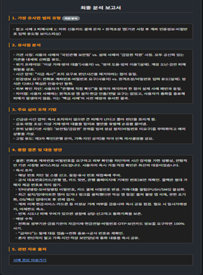
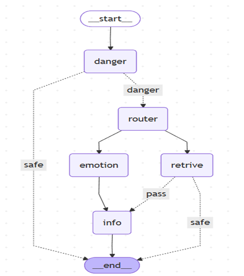

GUKHO Jeong
AI Service Developer
- 🎂 Birth: Sep 14, 1999 (Age 25)
- 📞 Phone: 010-4138-5728
- 📧 Email: mrgjh13579@gmail.com
- 📍 Address: Jurye-ro, Sasang-gu, Busan
- 🔗 Github: View Repository
- 🎖️ Military: ROK Army Sergeant (Discharged)
(2019.03.04 - 2020.10.07) - 💡 Intro: An AI Service Developer who designs LangGraph and RAG pipelines to build services.
Real-time Voice Phishing Detection AI Agent
1. Overview
"AI analyzes calls in real-time to prevent wire transfer inducement and provides response guides against increasingly sophisticated voice phishing."
2. Challenge (Situation & Task)
🧐 Intent
Voice phishing damage is continuously increasing, and the 20-30s generation is particularly vulnerable to sophisticated methods like 'Prosecutor Impersonation'. Beyond simple warnings, we needed an agent that calculates logical grounds (similar damage cases) for "Why this is phishing" to persuade the victim.
🚧 Difficulties
- Low Relevance: Standard RAG (Vector Search) failed to match specific proper nouns like "Prosecutor's Office" or exact methods, leading to irrelevant guidance.
- Latency: Delays in STT conversion and LLM response speed in real-time calls caused missed timings.
- Context Maintenance: Difficulty in managing tokens to process the entire context without missing key points during long calls.
3. Process & Action
🧠 LangGraph-based Agent Design
We built an Agentic Workflow that judges situations and controls the flow, rather than simple Q&A.

[Detect -> Psychology -> RAG -> Info Flow]
- Risk Scoring: Immediate warning trigger upon detecting keywords like 'Transfer', 'Password', 'App Installation'.
- Psychological Analysis: Analyzed the panicked victim's psychological state to generate empathetic responses first.
🔍 Hybrid RAG & Rerank Optimization
Advanced the search pipeline for accurate similar case retrieval.
- Hybrid Search: Ensembled BM25 (strong in keyword matching) and FAISS (strong in semantic search) to improve Recall.
- Cohere Rerank: Re-ranked initially retrieved documents by contextual relevance to provide the best context to the LLM.
- Chunk Optimization: Quantitatively evaluated various chunk sizes using the RAGAS framework.
📊 RAGAS Performance Evaluation (Model & Chunk Size)
| Model | Chunk Size | Context Precision | Context Recall | Faithfulness | Answer Relevancy |
|---|---|---|---|---|---|
| BM25 | 250 | 1.0 | 0.6905 | 0.7196 | 0.7667 |
| BM25 | 500 | 1.0 | 0.9167 | 0.8091 | 0.7703 |
| BM25 | 750 | 1.0 | 0.9167 | 0.7487 | 0.7675 |
| BM25 | 1000 | 1.0 | 0.9167 | 0.8159 | 0.7602 |
| Ensemble | 250 | 1.0 | 0.9167 | 0.7660 | 0.7765 |
| Ensemble | 500 | 1.0 | 0.9167 | 0.7556 | 0.7781 |
| Ensemble | 750 | 1.0 | 0.9167 | 0.7507 | 0.7746 |
| Ensemble | 1000 (Selected) | 1.0 | 0.9167 | 0.9278 | 0.7790 |
| Retriever | 250 | 1.0 | 0.9167 | 0.7569 | 0.7720 |
| Retriever | 500 | 1.0 | 0.6905 | 0.6791 | 0.7805 |
| Retriever | 750 | 1.0 | 0.7738 | 0.5944 | 0.7848 |
| Retriever | 1000 | 1.0 | 0.9167 | 0.6009 | 0.7612 |
* Result Analysis: The Ensemble(Hybrid) + Chunk 1000 combination showed superior performance in Faithfulness (0.9278) and Recall (0.9167) compared to single models, and was selected as the final model.
4. Result & Insight
🚀 Performance Improvement (Troubleshooting)
Initial OpenAI Whisper was too slow for real-time -> Switched to NCP (Naver Cloud Platform) Clova Speech, reducing latency by over 50% while maintaining Korean accuracy.
💻 Service Demo
1. Call Voice Input
2. Risk Keyword Warning
3. Final Response Guide
💡 Insight (Retrospective)
- SaaS API Pros/Cons: While commercial APIs like Clova Speech offer great performance, cost issues can arise. I plan to fine-tune local models (e.g., Distil-Whisper) for cost efficiency in the future.
- Potential of Agents: I learned that agent systems performing complex judgment and actions are much more powerful for real-world problem solving than simple chatbots.